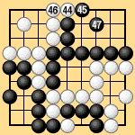
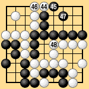

| 4.4 End by Agreement in Area Rules III |
|---|
|
The main feature of area rules III is that they identify the point at which sente ceases to have value. At this point, provided there are no unusual positions with major pending alterations (alterations that will not depend on who plays first, of course), both players can usually see easily what will happen in the rest of the game, and may agree to end the game at the first pass. In Dia. 4-3 White can make the first pass after Black 47. The number of remaining neutral points is even. Even in gote, White will be able to occupy two of the neutral points, so Black 47 is the last competitive move and the result will be unaffected if White passes with 48. The players can agree that the game has ended at this point. When counting the score, of course, they must fill the neutral points in turn and remove the dead stones by capturing them, but it should still be noted that the game can end by agreement when White passes at 48. This is exactly the point at which the game would end under traditional territory rules. |
|  | |
|
| In Dia. 4-4 there are an odd number of neutral points, so first White plays 48, then Black passes at 49. The players now agree that the game has ended. White 48 is the last competitive move. Under traditional territory rules the game would end without White 48, so there is a difference of one move, but the important point is that under area rules III the games in Dias. 4-3 and 4-4 can end by agreement without filling in all the neutral points. The importance of this is that under territory rules, the game also traditionally ends when sente no longer has any value. |
|  | |
|
| The major, basic difference between traditional territory rules and area rules III is that area rules III make it clear that after the first pass, all positions remaining to be resolved are to be resolved by actual play. This element is missing from traditional territory rules, which consider the agreed end of the game to be the final end, and rely on precedents or unnatural laws to deal with special positions after the end. |